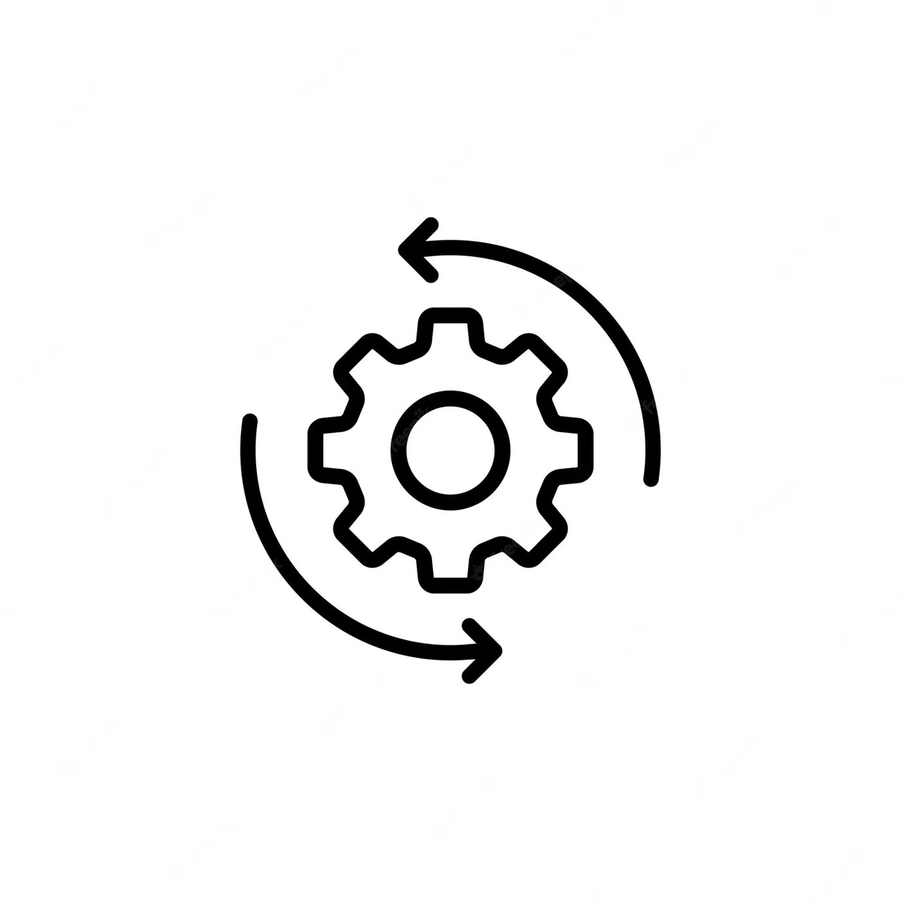

Change is an inevitable part of life. In the business world, change is essential for organizations to adapt to evolving market conditions, technological advancements, and emerging trends. However, managing change can be a challenging task for organizations, as it involves transforming existing practices, processes, and structures.
To help organizations navigate the change management process, several models have been developed by experts in the field. In this article, we will discuss the top 10 change management models, their pros and cons, and provide a user case for each model. There are:
- Lewin's Change Management Model
- Kotter's 8-Step Change Model
- ADKAR Model
- Bridges' Transition Model
- Prosci's Change Management Process
- McKinsey 7-S Model
- Satir Change Management Model
- Kübler-Ross Change Curve
- Action Research Model
- Agile Change Management Model

1. Lewin's Change Management Model
Lewin's Change Management Model is a widely recognized framework for managing organizational change. Developed by Kurt Lewin in the 1940s, a psychologist and social scientist, the model provides a simple yet powerful approach to managing change in organizations. It consists of three stages: unfreezing, changing, and refreezing.
The first stage, unfreezing, involves creating the conditions necessary for change to occur. This may involve challenging the status quo and creating a sense of dissatisfaction with the current situation. The goal of this stage is to make people aware of the need for change and to reduce resistance to it.
The second stage, changing, involves implementing the desired change. This may involve introducing new processes, procedures, or technologies, or changing the way people work. The goal of this stage is to ensure that the change is implemented successfully and that people are able to adapt to the new ways of working.
The final stage, refreezing, involves embedding the change into the organization's culture and ensuring that it becomes the new status quo. This may involve updating policies and procedures, providing training and support, and reinforcing the new behaviors and processes. The goal of this stage is to ensure that the change is sustained over time and becomes part of the organization's DNA.
Pros:
- The model is straightforward and easy to understand.
- It emphasizes the importance of preparation and planning.
- It acknowledges the importance of communication and involvement of stakeholders.
Cons:
- The model is seen as too simplistic for complex change initiatives.
- It focuses on changing structures rather than behaviors.
- It doesn't address the emotional and psychological impact of change.
User Case:
An organization that is struggling with low employee engagement and high turnover. The leaders of the organization might use Lewin's model to guide a change initiative aimed at improving employee satisfaction and retention. They would begin by creating a sense of urgency around the issue, perhaps by sharing data on turnover rates and employee feedback. They would then work with employees to identify areas for improvement and to develop solutions to address the issues. Finally, they would implement the changes and work to embed them into the organization's culture over time. By using Lewin's model, the leaders would be able to approach the change initiative in a structured and systematic way, increasing the likelihood of success.
2. Kotter's 8-Step Change Model
Kotter's 8-step change model is a popular framework for managing organizational change. Developed by John Kotter, a Harvard Business School professor, the model provides a step-by-step approach to help organizations achieve successful change.
The 8 steps in Kotter's model are as follows:
- Create urgency: This step involves creating a compelling case for change and communicating it throughout the organization. Leaders need to convey the reasons why change is necessary and the consequences of not taking action.
- Build a coalition: The second step involves creating a team of influential people who can help drive the change effort. This coalition should include a mix of individuals from different levels of the organization who have the skills and authority to make the necessary changes.
- Create a vision for change: A clear and compelling vision is essential for motivating people to support the change effort. Leaders need to articulate a vision that is both desirable and feasible, and that aligns with the organization's values and goals.
- Communicate the vision: Once the vision has been established, it needs to be communicated effectively throughout the organization. Leaders should use multiple channels and methods to ensure that everyone understands the vision and what it means for them.
- Empower others to act on the vision: This step involves removing barriers to change and giving people the tools and resources they need to make the vision a reality. Leaders need to empower employees to take ownership of the change effort and encourage them to experiment and take risks.
- Create short-term wins: Short-term wins are essential for building momentum and maintaining support for the change effort. Leaders should identify quick wins that can be achieved early on in the process and celebrate these successes to keep people motivated.
- Consolidate gains and produce more change: The seventh step involves building on the momentum of the short-term wins and making additional changes that align with the overall vision. Leaders need to continue to communicate the importance of the change effort and encourage employees to stay committed to the process.
- Anchor new approaches in the organization's culture: Finally, the new approaches and behaviors need to be integrated into the organization's culture to ensure that they are sustained over time. Leaders need to embed the changes into the organization's policies, procedures, and systems, and ensure that they become part of the way things are done.
Overall, Kotter's 8-step change model is a useful framework for managing organizational change. By following these steps, leaders can create a sense of urgency, build a coalition of support, and develop a clear vision for change. They can then empower employees to take ownership of the change effort, celebrate short-term wins, and build momentum over time. Finally, they can anchor the changes in the organization's culture to ensure that they are sustained over the long term.
Pros:
- The model is comprehensive and detailed.
- It provides a structured approach to managing change.
- It emphasizes the importance of leadership and engagement.
Cons:
- The model can be time-consuming and resource-intensive.
- It doesn't address the emotional and psychological impact of change.
- It may not be suitable for small-scale change initiatives.
User Case:
An example of using the Kotter's 8-Step Change Model in practice is when an organization wants to implement a new performance management system. In this case, the organization would follow the eight steps of the model, starting with creating a sense of urgency for change and building a coalition of key stakeholders who support the change. The organization would then formulate a clear and compelling vision for the new performance management system, communicate this vision effectively to all employees, and empower employees to take action towards achieving the vision. Along the way, the organization would celebrate small wins and successes, using these to build momentum and confidence in the change process. Finally, the organization would embed the new performance management system into its culture and ensure that it is sustained over time. Through this process, the organization would be able to implement the new performance management system successfully, with the support and engagement of all stakeholders.
3. ADKAR Model
The ADKAR model is a change management framework that helps organizations and individuals understand and manage change. Developed by Prosci, a leading provider of change management training and resources, the model provides a structured approach to managing change by focusing on the five key elements that must be present for change to be successful: awareness, desire, knowledge, ability, and reinforcement.
The first element of the ADKAR model is awareness. This involves creating awareness among stakeholders about the need for change. This may involve communicating the reasons for the change, the benefits of the change, and the risks of not changing. The goal of this element is to create a sense of urgency and motivate people to engage in the change process.
The second element is desire. This involves creating a desire among stakeholders to support and participate in the change. This may involve communicating how the change will benefit them personally, addressing any concerns or resistance to change, and involving them in the change process. The goal of this element is to ensure that people are committed to the change and willing to put in the effort to make it successful.
The third element is knowledge. This involves providing stakeholders with the knowledge and skills they need to support and participate in the change. This may involve providing training, coaching, or other resources to help people understand the change and how it will affect them. The goal of this element is to ensure that people have the information and resources they need to support the change.
The fourth element is ability. This involves providing stakeholders with the ability to implement the change. This may involve providing tools, resources, or support to help people implement the change and overcome any barriers or obstacles they may encounter. The goal of this element is to ensure that people are able to make the change and that the change is implemented successfully.
The final element is reinforcement. This involves providing ongoing reinforcement to ensure that the change is sustained over time. This may involve celebrating successes, providing ongoing training and support, or making changes to policies and procedures to embed the change into the organization's culture. The goal of this element is to ensure that the change is sustained over time and becomes the new way of doing things.
Pros:
- The model is goal-oriented and results-driven.
- It acknowledges the importance of individual needs and motivations.
- It provides a structured approach to managing change.
Cons:
- The model may be too focused on individual needs and motivations and neglect the importance of organizational culture and context.
- It may not be suitable for complex change initiatives.
- It doesn't address the emotional and psychological impact of change.
User Case:
An organization that is implementing a new software system. The leaders of the organization might use the ADKAR model to guide the change initiative by focusing on each element of the model. They would begin by creating awareness among stakeholders about the need for the change, communicating the benefits and risks of the new system. They would then work to create a desire among stakeholders to support the change, by addressing any concerns or resistance to change and involving them in the change process. They would provide the necessary knowledge and skills to support the change, by providing training and other resources to help people understand the new system. They would ensure that people have the ability to implement the change, by providing tools and support to overcome any barriers or obstacles. Finally, they would provide ongoing reinforcement to ensure that the change is sustained over time, by celebrating successes and making changes to policies and procedures to embed the change into the organization's culture. By following this structured approach, the organization would be more likely to successfully implement the new software system and achieve the desired outcomes.
4. Bridges' Transition Model
Bridges' Transition Model, also known as the Bridges' Change Curve, is a framework that helps individuals and organizations understand and manage the emotional and psychological effects of change. The model was developed by William Bridges, a change management expert, and is widely used in organizational change management.
The Bridges' Transition Model consists of three stages: Ending, Neutral Zone, and New Beginning.
- Ending: The first stage of the transition process involves letting go of the old ways and the past. This stage can be difficult for many people, as it involves coming to terms with the loss of the familiar and comfortable. People may experience feelings of sadness, grief, anger, and resistance during this stage.
- Neutral Zone: The second stage of the transition process is the Neutral Zone, also known as the "in-between" stage. This stage is characterized by uncertainty, confusion, and ambiguity. People may feel disoriented, anxious, and unsure about what the future holds. This stage is important because it allows people to explore new possibilities and ideas, and to experiment with new ways of doing things.
- New Beginning: The third and final stage of the transition process is the New Beginning. This stage involves accepting the change and embracing the new reality. People start to feel more confident and optimistic about the future, and are able to develop new routines and ways of working.
Bridges' Transition Model is particularly useful in managing transitions that involve a significant change, such as a merger or acquisition, restructuring, or a major technology implementation. By understanding the emotional and psychological aspects of change, organizations can better prepare individuals for the transition and support them through the process.
Pros:
- The model acknowledges the importance of addressing the emotional and psychological impact of change.
- It provides a framework for managing transitions and losses.
- It emphasizes the importance of communication and involvement.
Cons:
- The model may be too focused on individual needs and neglect the importance of organizational context.
- It may be too subjective and difficult to measure.
- It doesn't provide a structured approach to managing change.
User Case:
An example of using the Bridges' Transition Model in practice is when a company is going through a major restructuring. The Ending stage would involve acknowledging the loss of the old structure and ways of working, and providing support and resources for employees who may be impacted by the change. The Neutral Zone stage would involve providing opportunities for employees to explore new roles and responsibilities, and to develop new skills and competencies. The New Beginning stage would involve celebrating successes and milestones, and reinforcing the new ways of working through training and development programs. By following the three stages of the Bridges' Transition Model, the company would be able to effectively manage the transition process and minimize the impact of the change on employees.
5. Prosci's Change Management Process
Prosci's Change Management Process is a structured and holistic approach to managing change in organizations. The model was developed by Prosci, a leading provider of change management training and consulting services. The Prosci model consists of three phases: preparing for change, managing change, and reinforcing change.
1. Preparing for change: The first phase of the Prosci model involves preparing for change. This phase includes three key elements:
- Define the change: This involves clearly defining the nature and scope of the change, including the objectives, goals, and desired outcomes.
- Prepare the organization: This involves assessing the organization's readiness for change and identifying any potential barriers or challenges.
- Develop a change management plan: This involves developing a comprehensive plan for managing the change, including communication strategies, stakeholder engagement, and risk management.
2. Managing change: The second phase of the Prosci model involves managing the change. This phase includes four key elements:
- Communicate the change: This involves communicating the change to all stakeholders, including employees, customers, and suppliers.
- Engage stakeholders: This involves engaging stakeholders in the change process and building support for the change.
- Train and develop employees: This involves providing training and development opportunities to help employees adapt to the change and develop new skills and competencies.
- Implement the change: This involves implementing the change in a structured and systematic way, including monitoring progress and adjusting the change management plan as needed.
3. Reinforcing change: The final phase of the Prosci model involves reinforcing change. This phase includes three key elements:
- Review and evaluate the change: This involves reviewing the outcomes of the change and evaluating its success.
- Embed the change: This involves embedding the change into the organization's culture and processes, and ensuring that it becomes part of the new way of working.
- Celebrate success: This involves celebrating the success of the change and recognizing the contributions of all stakeholders.
Pros:
- The Prosci model provides a comprehensive and structured approach to managing change, covering all aspects of the change process.
- The model emphasizes the importance of stakeholder engagement and communication, which are critical factors in the success of change management initiatives.
- The model is based on research and best practices in change management, and is widely recognized as a leading framework in the field.
Cons:
- The model may be overly complex for smaller organizations or simpler changes.
- The model requires significant planning and resources, which may be a challenge for some organizations.
- The model may not be suitable for all types of changes or industries.
User Case:
An example of using the Prosci model in practice is when a company is implementing a new customer relationship management (CRM) system. In the Preparing for change phase, the company would define the scope and objectives of the change, assess the organization's readiness for change, and develop a change management plan. In the Managing change phase, the company would communicate the change to all stakeholders, engage employees and customers in the change process, provide training and development opportunities, and implement the change in a structured and systematic way. In the Reinforcing change phase, the company would review the outcomes of the change, embed the new CRM system into the organization's culture and processes, and celebrate the success of the change. By following the Prosci model, the company would be able to effectively manage the change process and achieve the desired outcomes.
6. McKinsey 7-S Model
The McKinsey 7-S model is a framework for organizational effectiveness developed by McKinsey & Company, a management consulting firm. The model consists of seven interdependent elements that must be aligned and reinforced to achieve organizational success. The seven elements are strategy, structure, systems, shared values, skills, staff, and style.
- Strategy: This refers to the plan of action designed to achieve a particular goal or objective. The strategy element of the McKinsey 7-S model involves identifying the organization's mission, goals, and objectives, and developing a strategy that is aligned with these factors.
- Structure: This refers to the organizational structure or framework that defines the roles, responsibilities, and relationships within the organization. The structure element of the McKinsey 7-S model involves assessing the organization's structure and determining whether it is aligned with the strategy and goals.
- Systems: This refers to the processes, procedures, and tools that support the organization's operations. The systems element of the McKinsey 7-S model involves identifying and evaluating the systems that are in place, and determining whether they are effective and efficient.
- Shared values: This refers to the core values and beliefs that are shared by members of the organization. The shared values element of the McKinsey 7-S model involves assessing the organization's culture and determining whether it is aligned with the strategy and goals.
- Skills: This refers to the competencies and capabilities of the organization's employees. The skills element of the McKinsey 7-S model involves assessing the skills and competencies of the organization's employees, and determining whether they are aligned with the strategy and goals.
- Staff: This refers to the organization's human resources, including the number of employees, their qualifications, and their roles and responsibilities. The staff element of the McKinsey 7-S model involves assessing the organization's staffing levels and capabilities, and determining whether they are aligned with the strategy and goals.
- Style: This refers to the leadership style and management practices within the organization. The style element of the McKinsey 7-S model involves assessing the leadership and management practices within the organization, and determining whether they are aligned with the strategy and goals.
Pros:
- The McKinsey 7-S model provides a comprehensive and holistic approach to assessing and improving organizational effectiveness.
- The model emphasizes the importance of aligning all elements of the organization to achieve success.
- The model is widely recognized and used by management consultants and organizations worldwide.
Cons:
- The model may be overly complex for smaller organizations or simpler changes.
- The model may be difficult to implement and may require significant resources.
- The model may not be suitable for all types of changes or industries.
User Case:
An example of using the McKinsey 7-S model in practice is when a company is going through a merger or acquisition. In this case, the company would assess all seven elements of the model, including the strategy, structure, systems, shared values, skills, staff, and style, to determine whether they are aligned with the new organizational goals and objectives. The company may need to restructure, revise systems and processes, align shared values and culture, develop new skills and competencies, adjust staffing levels and roles, and change leadership and management practices to achieve alignment and success. By using the McKinsey 7-S model, the company would be able to effectively assess and manage the complex change process associated with a merger or acquisition.
7. Satir Change Management Model
The Satir Change Management Model was developed by Virginia Satir, a family therapist and pioneer in the field of communication and interpersonal relationships. The model focuses on the human element of change and emphasizes the importance of addressing people's emotions and reactions during the change process.
The Satir Change Management Model consists of five stages:
- Late Status Quo: This stage is characterized by a sense of comfort and stability. However, it is also a stage of complacency and resistance to change.
- Resistance: This stage is marked by fear, anger, and frustration. People are resistant to change and may try to maintain the status quo.
- Chaos: This stage is characterized by confusion and disorientation. People may feel overwhelmed by the change and struggle to adapt.
- Integration: This stage involves making sense of the change and finding new ways to adapt. People begin to understand the benefits of the change and find ways to incorporate it into their daily lives.
- New Status Quo: This stage involves establishing a new sense of stability and routine. People have adapted to the change and are comfortable with the new way of doing things.
Pros:
- The model emphasizes the importance of human elements in change management.
- It acknowledges the importance of communication and relationships.
- It provides a framework for addressing emotional and psychological needs.
Cons:
- The model may be too focused on individual needs and neglect the importance of organizational context and culture.
- It may be too subjective and difficult to measure.
- It doesn't provide a structured approach to managing change.
User Case:
An example of using the Satir Change Management Model in practice is when a company is implementing a new software system. In this case, the company would need to assess the emotions and reactions of employees during each stage of the change process. The company would need to communicate openly with employees, address their concerns and fears, and provide training and support to help them adapt to the new system. By using the Satir Change Management Model, the company would be able to manage the complex emotional reactions of employees and ensure a smoother transition to the new software system.
8. Kübler-Ross Change Curve
The Kübler-Ross Change Curve, also known as the Five Stages of Grief, is a model that explains the emotional journey people go through when experiencing a significant change or loss. The model was developed by Elisabeth Kübler-Ross, a Swiss-American psychiatrist and author, in her book "On Death and Dying."
The Kübler-Ross Change Curve consists of five stages:
- Denial: In this stage, people experience shock and disbelief. They may deny that the change is happening or refuse to accept its reality.
- Anger: In this stage, people feel frustration, anger, and resentment towards the change. They may blame others or become aggressive.
- Bargaining: In this stage, people may try to negotiate or make deals to avoid the change. They may try to find a compromise or a way to reduce the impact of the change.
- Depression: In this stage, people feel sadness, grief, and hopelessness. They may withdraw from others and become introspective.
- Acceptance: In this stage, people come to terms with the change and begin to adapt. They may feel a sense of peace and be ready to move forward.
Pros:
- The model acknowledges the importance of addressing emotional and psychological needs during the change process.
- It provides a framework for understanding individuals' reactions to change.
- It can help managers anticipate and manage resistance to change.
Cons:
- The model may be too focused on individual needs and neglect the importance of organizational context and culture.
- It may be too subjective and difficult to measure.
- It doesn't provide a structured approach to managing change.
User Case:
An example of using the Kübler-Ross Change Curve in practice is when a company is implementing a new organizational structure that will lead to job losses. In this case, the company would need to anticipate the emotional reactions of employees and prepare to support them through each stage of the change curve. The company would need to communicate openly with employees, address their fears and concerns, and provide support and resources to help them adapt to the change. By using the Kübler-Ross Change Curve, the company would be able to anticipate and manage the emotional reactions of employees and help them come to terms with the change.
9. Action Research Model
The Action Research Model is a change management model that involves a cyclical process of planning, action, observation, and reflection. The model is commonly used in organizational development to create a culture of continuous improvement and solve complex problems.
The Action Research Model consists of six steps:
- Identify the problem: The first step in the Action Research Model is to identify the problem or opportunity for change. This involves gathering data, analyzing the situation, and understanding the root cause of the problem.
- Formulate a research question: In this step, a research question is formulated that will guide the research process. The research question should be focused, clear, and relevant to the problem.
- Develop an action plan: The next step is to develop an action plan that outlines the steps that will be taken to address the problem. The action plan should be specific, measurable, achievable, relevant, and time-bound.
- Implement the plan: Once the action plan is developed, it is time to implement the plan. This involves taking action, making changes, and monitoring progress.
- Evaluate the results: In this step, the results of the action plan are evaluated to determine if the desired outcomes have been achieved. This involves analyzing data, assessing the impact of the changes, and identifying areas for further improvement.
- Reflect on the process: The final step in the Action Research Model is to reflect on the process and learn from the experience. This involves considering what went well, what could be improved, and what can be learned from the process.
Pros:
- The model provides a collaborative and iterative approach to change management.
- It emphasizes the importance of data-driven decision making and continuous improvement.
- It involves stakeholders in the change process and builds their ownership and commitment.
Cons:
- The model may be too time-consuming and resource-intensive.
- It may neglect the importance of top-down leadership and direction.
- It may generate conflicting and ambiguous data that can be difficult to interpret and act upon.
User Case:
An example of using the Action Research Model in practice is when an organization wants to improve employee satisfaction. In this case, the organization would follow the six steps of the Action Research Model, starting with identifying the problem of low employee satisfaction. The organization would then formulate a research question, develop an action plan to improve employee satisfaction, implement the plan, evaluate the results, and reflect on the process. Through this process, the organization would be able to identify the root cause of the problem, involve employees in the change process, and continuously improve employee satisfaction over time.
10. Agile Change Management Model
The Agile Change Management Model is an iterative and flexible approach to change management that prioritizes collaboration, experimentation, and continuous improvement. The model is based on the principles of Agile methodology, which is commonly used in software development and project management.
The Agile Change Management Model consists of five phases:
- Define the change: In this phase, the change initiative is defined and the objectives and goals are established. The change team works closely with stakeholders to ensure that the change aligns with the organization's strategic objectives.
- Plan and design the change: In this phase, the change team develops a plan and design for the change initiative. The plan is developed in an iterative and collaborative process, with frequent feedback and adjustments based on lessons learned.
- Implement the change: In this phase, the change initiative is implemented in an iterative and incremental manner. The change team works closely with stakeholders to ensure that the change is communicated effectively and that any issues or concerns are addressed in a timely manner.
- Monitor and evaluate the change: In this phase, the change team monitors the progress of the change initiative and evaluates its impact. The team uses metrics and feedback to identify areas for improvement and to make adjustments to the change initiative as necessary.
- Embed the change: In this phase, the change is embedded into the organization's culture and processes. The change team works to ensure that the change is sustained over time and that it becomes part of the organization's standard way of operating.
Pros:
- The model provides a flexible and adaptable approach to change management.
- It emphasizes the importance of collaboration and continuous improvement.
- It enables quick testing and adjustment of change initiatives based on feedback.
Cons:
- The model may be too focused on short-term goals and neglect the importance of long-term vision and direction.
- It may generate conflicting and competing priorities that can be difficult to manage.
- It may require significant investment in training and infrastructure to implement effectively.
User Case:
An example of using the Agile Change Management Model in practice is when an organization wants to implement a new software system. In this case, the organization would follow the five phases of the Agile Change Management Model, starting with defining the change initiative and establishing the objectives and goals. The change team would then work collaboratively with stakeholders to plan and design the change initiative, implementing it in an iterative and incremental manner. The team would monitor the progress of the change initiative and evaluate its impact, making adjustments based on feedback and lessons learned. Finally, the team would work to embed the change into the organization's culture and processes, ensuring that it is sustained over time. Through this process, the organization would be able to implement the new software system in a faster and more flexible manner, while also ensuring that stakeholders are engaged and supportive of the change initiative.
Conclusion
Managing change is a complex and challenging process that requires a structured and comprehensive approach. The top 10 change management models provide different frameworks for managing change at the individual, team, and organizational levels, and addressing the emotional, psychological, and cultural aspects of change. Each model has its own pros and cons, and the choice of the model depends on the specific context, goals, and challenges of the change initiative. By choosing the right change management model and adapting it to the specific needs of the organization, managers can achieve successful change outcomes, minimize resistance and disruption, and build a culture of continuous improvement and innovation.
List of References
- Beer, M., & Nohria, N. (2000). Cracking the code of change. Harvard Business Review, 78(3), 133-141.
- Bridges, W. (2003). Managing transitions: Making the most of change. Da Capo Press.
- Burnes, B. (2004). Kurt Lewin and the planned approach to change: A re‐appraisal. Journal of Management Studies, 41(6), 977-1002.
- Cameron, E., & Green, M. (2015). Making sense of change management: A complete guide to the models, tools and techniques of organizational change. Kogan Page Publishers.
- Doppelt, B. (2010). Leading change toward sustainability: A change-management guide for business, government and civil society. Routledge.
- Hiatt, J. M. (2006). ADKAR: A model for change in business, government and our community. Prosci.
- Kotter, J. P. (1996). Leading change. Harvard Business Press.
- Kübler-Ross, E. (1969). On death and dying. Routledge.
- Lewin, K. (1947). Frontiers in group dynamics: Concept, method, and reality in social science; social equilibria and social change. Human relations, 1(1), 5-41.
- Prosci (2021). Change management methodology.